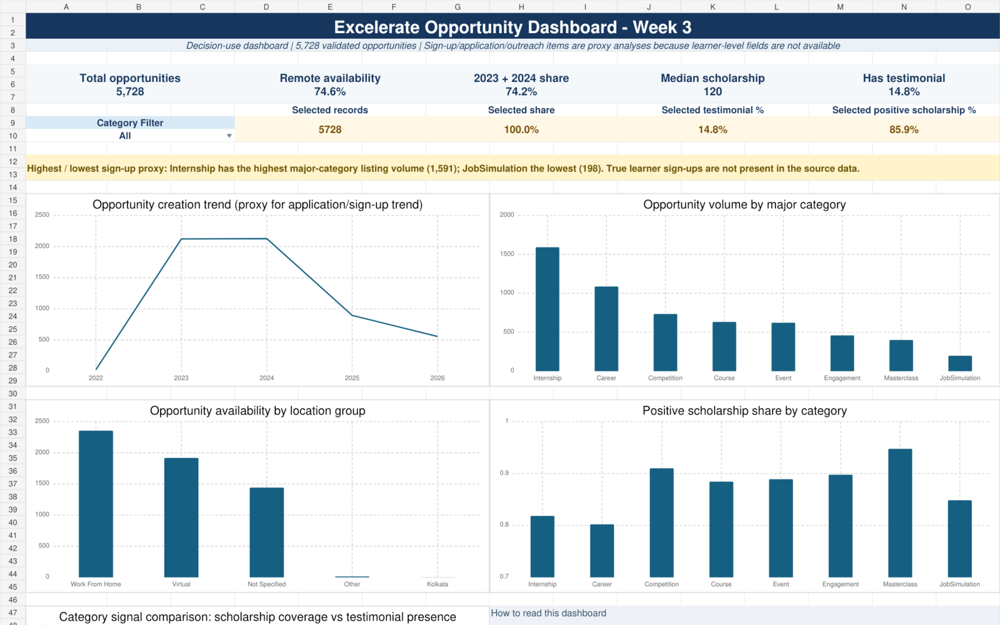

DATA VISUALISATION • EXCEL • INTERNSHIP
Opportunity Data Analysis Dashboard
A four-week Excelerate internship project that transformed 5,728 validated opportunity records into a documented analytical dataset, exploratory findings, an interactive Excel dashboard, and stakeholder-focused recommendations.

My contribution
- Led and coordinated a remote project team and weekly deliverables.
- Cleaned and validated opportunity records while preserving unsupported outliers for review.
- Maintained a structured data dictionary and cleaning log.
- Consolidated team analysis and reviewed outputs for accuracy and consistency.
Dashboard and analysis
- Five headline KPI measures and an interactive category filter.
- Five charts covering creation trends, category mix, delivery location and scholarship signals.
- Exploratory analysis across categories, dates, locations, engagement indicators, fees and scholarships.
- Presentation-ready insights, recommendations, limitations and conclusions.
Selected findings
- 74.6% of opportunities were listed as Work From Home or Virtual.
- 2023 and 2024 accounted for 74.2% of dated opportunity records.
- Internships were the largest category with 1,591 records.
- Only 14.8% of opportunities had at least one linked testimonial.
Analytical judgement
The dataset described opportunity listings rather than learner applications or sign-ups. I therefore labelled creation trends, location and engagement measures as supply-side proxies instead of presenting them as learner behaviour. Scholarship values were reported using coverage shares and medians because the unit was undocumented and extreme values were present.
Public portfolio note
This case study shows only aggregated metrics and a dashboard preview. The cleaned source dataset and internship submission files are not published.